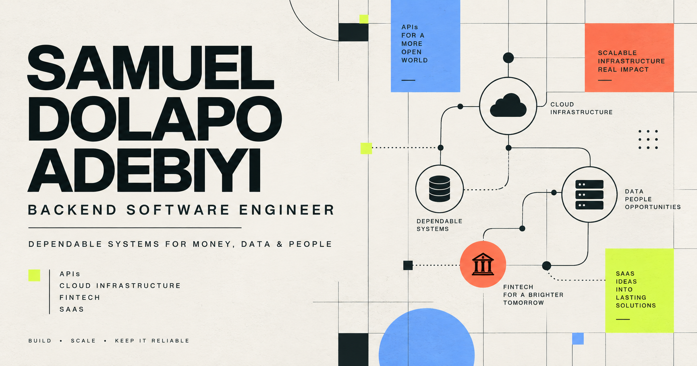

Multi-tenant SaaS01
CentiHR
An HR operations and UK sponsor-compliance platform spanning onboarding, Right to Work, recruitment, attendance, leave and evidence management.
Tenant isolation · MFA · role policies · audit trails · billing
London · Open to backend opportunities
Backend-focused software engineer with 6+ years of experience shipping secure APIs, cloud-hosted SaaS products and event-driven platforms.
CURRENT FOCUS
Resilient backend platforms
Golang & REST APIs
02Event-driven architecture
03Cloud & observability
04Secure SaaS delivery

01 / SELECTED WORK
Systems designed around reliability, security, auditability and the people who operate them.
An HR operations and UK sponsor-compliance platform spanning onboarding, Right to Work, recruitment, attendance, leave and evidence management.
A production-shaped payments platform with idempotent APIs, an immutable double-entry ledger and event-driven settlement across three Go services.
A consent-gated service that ingests synthetic UK account data, categorises transactions asynchronously and produces monthly financial insights.
PROJECT INDEX
10 additional products
Private single-clinician software for endoscopy and medical reporting, prescriptions, patient records, signed QR verification and secure document delivery.
A cloud-ready education platform designed around Go services, durable relational data, flexible document storage and infrastructure as code.
A voice-training platform for student curricula, voice checks and audition packs, with media workflows and permission-aware administration.
A content-managed website for asset integrity, QA/QC and non-destructive testing services across energy, manufacturing and construction.
A Flutter music experience with library, playlist and player state, supported by a lightweight Node service for media discovery.
A private-first gratitude journal that records blessings by category, tracks reflection streaks and stores entries locally on-device.
A meal and food management application with structured records, analysis views, report workflows and operational audit coverage.
A cooperative management system that centralises member, finance and administrative workflows with reporting and account recovery.
An event operations platform designed with Go services, PostgreSQL transactions, MongoDB read models and repeatable cloud infrastructure.
A secure operations platform covering matters, tasks, consultations, billing, documents, compliance records and controlled team access.
02 / EXPERIENCE
I work across product delivery, platform reliability and the engineering practices that keep both healthy.
Bina Services Ltd
Security and code reviews, backend API improvements and pragmatic engineering practices.
Clearer.io
Owned the ViralSweep transition, modernised a legacy SaaS platform and cut deployment time and errors by more than 50%.
WPGJ Software Solutions
Delivered APIs, payment integrations and release automation for mobile and web products.
Graceco UK Ltd
Automated logistics workflows and improved delivery consistency through containerised deployments.
FMDQ Ltd
Modernised legacy financial-market applications from Classic ASP to PHP, improved SQL reporting and supported internal tools for FMDQ Group’s integrated market infrastructure.
03 / ABOUT
I enjoy turning complex operating rules into software that feels clear, dependable and maintainable.
My work spans e-commerce, food manufacturing, fintech, legal services and clinical reporting. I pair backend engineering with practical DevOps: automated delivery, containerisation, infrastructure as code and production observability.
Go · PHP · Laravel · Node.js · REST APIs
AWS · Kubernetes · Docker · Terraform · CI/CD
PostgreSQL · MySQL · MongoDB · Kafka · RabbitMQ
React · TypeScript · Inertia · Flutter · Tailwind
START A CONVERSATION